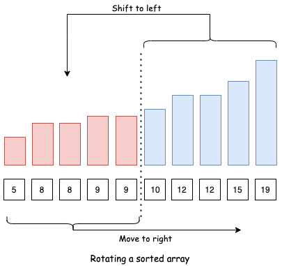
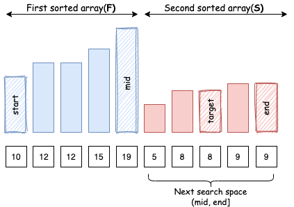
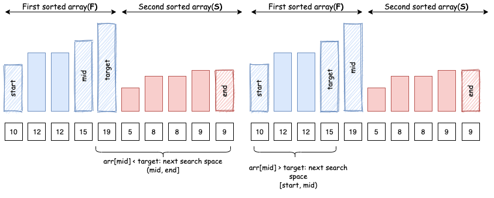
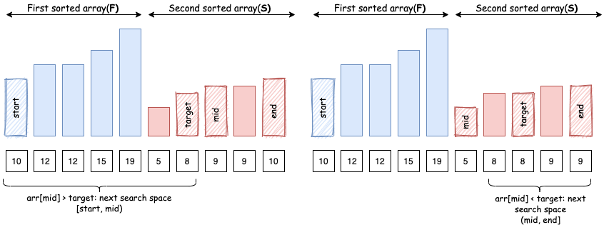

This problem is an extension to 33. Search in Rotated Sorted Array. The only difference is that this problem allows duplicate elements.
Intuition
Recall that after rotating a sorted array, what we get is two sorted arrays appended to each other.

Let's refer to the first sorted array as F and second as S.
Also, we can observe that all the elements of the second array S will be smaller or equal to the first
element start of F.

With this observation in mind, we can easily tell which of the 2 arrays (F or S) does a
target element lie in by just comparing it with the first element of the array.
Let's say we are looking for element target in array arr:
target > arr[start]: target exists in the first array F.

target < arr[start]: target exists in the second array S.

target == arr[start]: target obviously exists in the first array
F, but it might also be present in the second array S.

Let's define a helper function that tells us which array a target element might be present in:
Java// returns true if element `target` exists in the first sorted array. private boolean existsInFirst(int[] arr, int start, int element) { return arr[start] <= element; }C++// returns true if element exists in first array, false if it exists in second bool existsInFirst(vector& nums, int start, int element) { return nums[start] <= element; }
Algorithm
Recall that in standard binary search, we keep two pointers (i.e. start and end) to track
the search scope in an arr array. We then divide the search space in three parts [start,
mid), [mid, mid], (mid, end]. Now, we continue to look for our
target element in one of these search spaces.
By identifying the positions of both arr[mid] and target in F and
S, we can reduce search space in the very same way as in standard binary search:
arr[mid] lies in F, target lies in S: Since
S starts after F ends, we know that element lies here:(mid, end].

arr[mid] lies in the S, target lies in F: Similarly,
we know that element lies here: [start, mid).

arr[mid] and target lie in F: since both of them are in same
sorted array, we can compare arr[mid] and target in order to decide how to reduce
search space.

arr[mid] and target lie in S: Again, since both of them are
in same sorted array, we can compare arr[mid] and target in order to decide how to
reduce search space.

But there is a catch, if arr[mid] equals arr[start], then we know that
arr[mid] might belong to both F and S and hence we cannot find the relative
position of target from it.

Java// returns true if we can reduce the search space in current binary search space private boolean isBinarySearchHelpful(int[] arr, int left, int element) { return arr[left] != element; }C++// returns true if we can reduce the search space in current binary search space private boolean isBinarySearchHelpful(int[] arr, int left, int element) { return arr[left] != element; }
In this case, we have no option but to move to next search space iteratively. Hence, there are certain search spaces that allow a binary search, and some search spaces that don't.
Javaclass Solution { public boolean search(int[] nums, int target) { int n = nums.length; if (n == 0) return false; int end = n - 1; int start = 0; while (start <= end) { int mid = start + (end - start) / 2; if (nums[mid] == target) { return true; } if (!isBinarySearchHelpful(nums, start, nums[mid])) { start++; continue; } // which array does pivot belong to. boolean pivotArray = existsInFirst(nums, start, nums[mid]); // which array does target belong to. boolean targetArray = existsInFirst(nums, start, target); if (pivotArray ^ targetArray) { // If pivot and target exist in different sorted arrays, recall that xor is true when both operands are distinct if (pivotArray) { start = mid + 1; // pivot in the first, target in the second } else { end = mid - 1; // target in the first, pivot in the second } } else { // If pivot and target exist in same sorted array if (nums[mid] < target) { start = mid + 1; } else { end = mid - 1; } } } return false; } // returns true if we can reduce the search space in current binary search space private boolean isBinarySearchHelpful(int[] arr, int start, int element) { return arr[start] != element; } // returns true if element exists in first array, false if it exists in second private boolean existsInFirst(int[] arr, int start, int element) { return arr[start] <= element; } }C++class Solution { public: bool search(vector& nums, int target) { int n = nums.size(); if (n == 0) return false; int end = n - 1; int start = 0; while (start <= end) { int mid = start + (end - start) / 2; if (nums[mid] == target) { return true; } if (!isBinarySearchHelpful(nums, start, nums[mid])) { start++; continue; } // which array does pivot belong to. bool pivotArray = existsInFirst(nums, start, nums[mid]); // which array does target belong to. bool targetArray = existsInFirst(nums, start, target); if (pivotArray ^ targetArray) { // If pivot and target exist in different sorted arrays, recall that xor is true only when both the operands are distinct if (pivotArray) { start = mid + 1; // pivot in the first, target in the second } else { end = mid - 1; // target in the first, pivot in the second } } else { // If pivot and target exist in same sorted array if (nums[mid] < target) { start = mid + 1; } else { end = mid - 1; } } } return false; } // returns true if we can reduce the search space in current binary search space bool isBinarySearchHelpful(vector & nums, int start, int element) { return nums[start] != element; } // returns true if element exists in first array, false if it exists in second bool existsInFirst(vector & nums, int start, int element) { return nums[start] <= element; } };
Complexity Analysis
Time complexity : O(N)O(N) worst case, O(logN)O(\log N) best case, where NN is the length of the input array.
Worst case: This happens when all the elements are the same and we search for some different element. At each
step, we will only be able to reduce the search space by 1 since arr[mid] equals arr[start]
and it's not possible to decide the relative position of target from arr[mid].
Example: [1, 1, 1, 1, 1, 1, 1], target = 2.
Best case: This happens when all the elements are distinct. At each step, we will be able to divide our search space into half just like a normal binary search.
This also answers the following follow-up question:
As we can see, by having duplicate elements in the array, we often miss the opportunity to apply binary search in certain search spaces. Hence, we get O(N)O(N) worst case (with duplicates) vs O(logN)O(\log N) best case complexity (without duplicates).